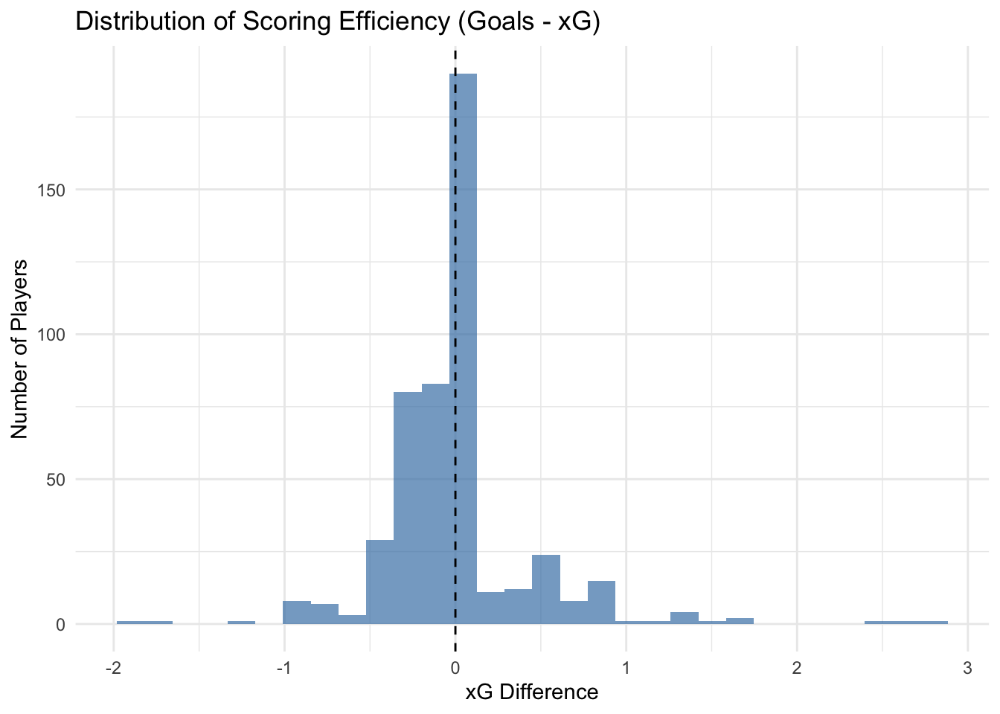
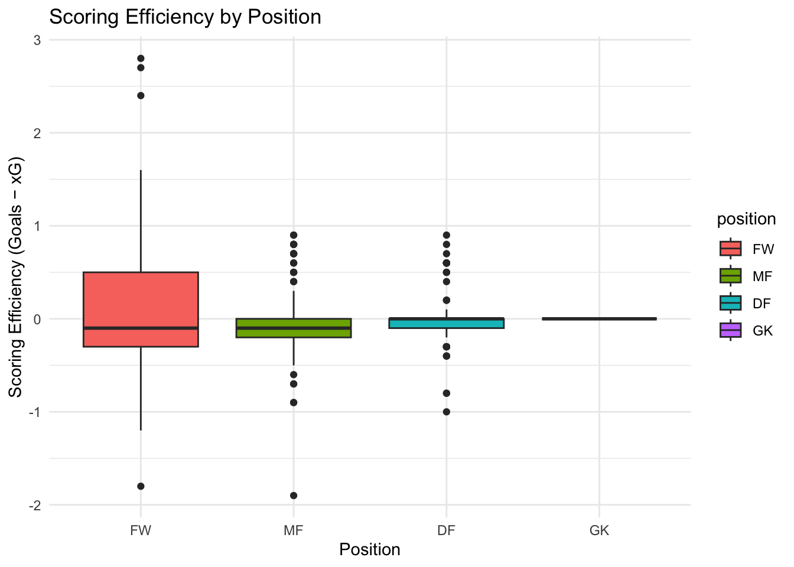
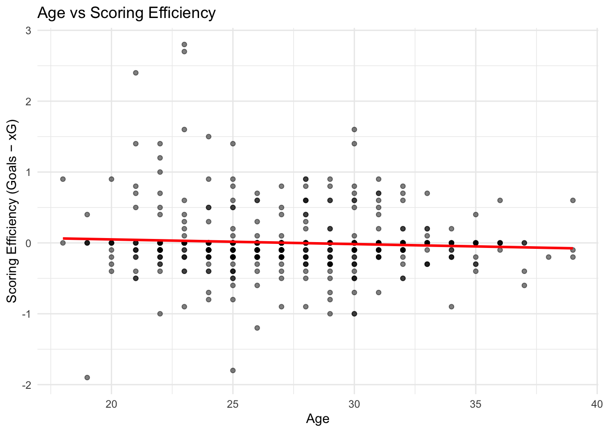
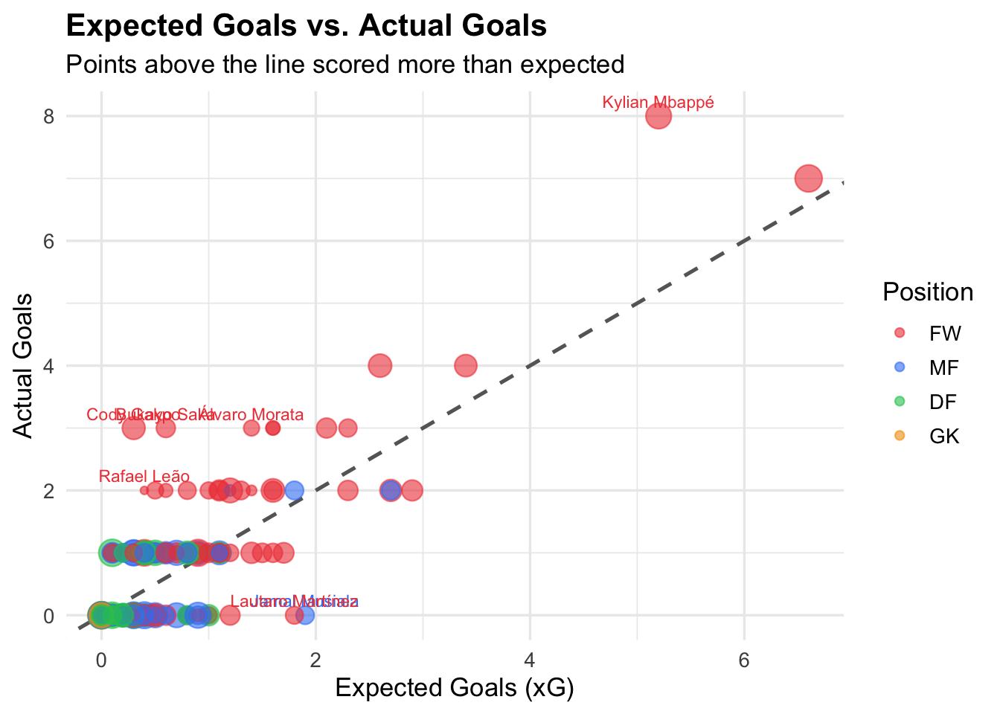
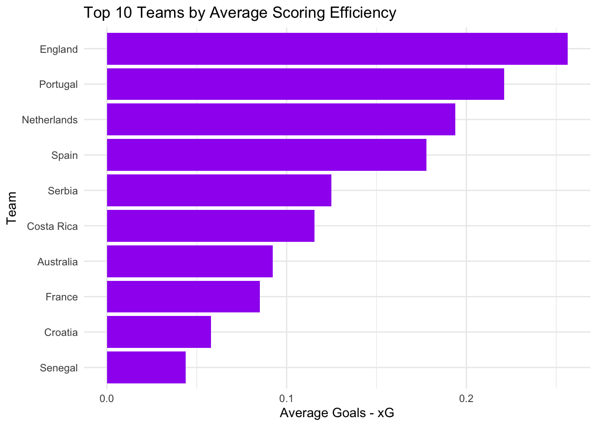

# libraries
library(tidyverse)
library(janitor)
library(ggplot2)
library(dplyr)
library(readr)
library(forcats)
library(skimr)
# load data
df <- read_csv(
"/Users/xuzibo/Desktop/Math244/final/Math-244-final-project-Team-GG/data/player_stats.csv",
show_col_types = FALSE
) %>%
clean_names()
# preview
# glimpse(df)FIFA 2022 Scoring Efficiency Analysis
Exploratory Data Analysis
Exploring the Data
What is your outcome variable(s)?
Our outcome variable will be xg_diff, the measurement of scoring efficiency computed by taking the difference between Goals and xG.
How well does it measure the outcome you are interested?
This outcome variable measures how much a player converts relative to the quality of their chances. We believe it is a reasonable proxy but can be noisy with players who have low shot volume and xG models themselves have errors.
How does it relate to your expectations?
We would expect forwards to show high variance while other positions to cluster near zero. We would also expect younger, more creative players to slightly overperform.
What are your key explanatory variables?
– goals: total goals scored
- xg: expected goals
- age_numeric: player age
- position: player position (FW, MF, DF, GK)
- xG_assist_per90: playmaking context
- minutes_90s: measurement of playing time
- team: national team
Data Cleaning and Transformation
# Clean data and create key variables
df <- df %>%
mutate(
xg_diff = goals - xg, # scoring efficiency
efficiency_per90 = goals_per90 - xg_per90, # per 90 efficiency
np_xg_diff = goals_pens - npxg, # non-penalty efficiency
np_efficiency_per90 = (goals_pens / minutes_90s) - (npxg / minutes_90s),
age_years = as.integer(str_extract(age, "^[0-9]+")), # extract numeric age
is_overperformer = if_else(xg_diff > 0, 1L, 0L), # binary indicator
position = factor(position, levels = c("FW", "MF", "DF", "GK"))
) %>%
filter(minutes_90s >= 1) %>% # remove low playing time
drop_na(xg, goals, position, age_years) # drop missing valuesThe raw dataset contained 680 player observations from the 2022 FIFA World Cup.
Filtering: We removed players with fewer than 1 full 90-minute equivalent play time and also dropped rows with missing values in xg, goals, position, and age_years.
New variables: Our primary outcome variable, xg_diff, was created by subtracting a player’s xG from their actual goals. A positive value indicates overperformance while a negative value indicates underperformance. We also created efficiency_per90 as the per-90 rate version of this difference which adjusts for playing time differences across players. The non-penalty version np_xg_diff was additionally created to remove the distorting effects of penalties. Lastly, the is_overperformer variable was created taking value 1 if a player scored more than their xG and 0 otherwise.
Age-parsing: The age variable was stored as a character string “years-days” format so we extracted only the years as an integer.
Figure 1
# Distribution of Efficiency
ggplot(df, aes(x = xg_diff)) +
geom_histogram(bins = 30, fill = "steelblue", alpha = 0.7) + # histogram
geom_vline(xintercept = 0, linetype = "dashed") + #break even line
labs(
title = "Distribution of Scoring Efficiency (Goals - xG)",
x = "xG Difference",
y = "Number of Players"
) +
theme_minimal()
The distribution shows that most players cluster around zero, indicating that players generally perform close to their expected goals. There is a slight right tail, indicating that a smaller number of players significantly outperform their xG. Overall, extreme overperformers and underperformers are relatively rare.
Figure 2
# Efficiency by Position (BOXPLOT)
ggplot(df, aes(x = position, y = xg_diff, fill = position)) +
geom_boxplot() +
labs(
title = "Scoring Efficiency by Position",
x = "Position",
y = "Scoring Efficiency (Goals − xG)"
) +
theme_minimal()
This boxplot shows that forwards tend to have a wider spread and slightly higher median efficiency compared to other positions. Defenders and midfielders are generally centered around zero, suggesting they perform closer to expectations. Goalkeepers show no variation since they rarely score, so their efficiency remains near zero.
Figure 3
# Total Goals vs Total xG by Position Plot
df |>
group_by(position) |>
summarise(
Total_Goals = sum(goals), # total goals by position
Total_xG = sum(xg, na.rm = TRUE) # total expected goals
) |>
pivot_longer(
cols = c(Total_Goals, Total_xG), # reshape for plotting
names_to = "metric",
values_to = "value"
) |>
ggplot(aes(x = position, y = value, fill = metric)) +
geom_col(position = "dodge", width = 0.6) + # side-by-side bars
scale_fill_manual(values = c(
"Total_Goals" = "#3b82f6",
"Total_xG" = "#94a3b8"
)) +
labs(
title = "Total Goals vs. Total xG by Position",
x = NULL,
y = "Total",
fill = NULL
) +
theme_minimal()
This Bar Chart reveals that midfielders and defenders actually underperform their xG while forwards overperform. We also notice that both goals and xg is nonexistent for goalkeepers, indicating that the GK position is irrelevant to our interest of study. These findings suggest that position is a meaningful predictor of xg_diff.
Figure 4
#Age vs Efficiency
# Plot age against scoring efficiency
ggplot(df, aes(x = age_years, y = xg_diff)) +
geom_point(alpha = 0.5) + # scatterplot points
geom_smooth(method = "lm", se = FALSE, color = "red", formula = y ~ x) + # regression line
labs(title = "Age vs Scoring Efficiency",
x = "Age",
y = "Scoring Efficiency (Goals − xG)") +
scale_x_continuous(breaks = seq(15, 45, by = 5)) + # x-axis labels
theme_minimal() # clean theme
This suggests that age is not a strong predictor of scoring efficiency in this dataset, as points are widely scattered across all ages. Both younger and older players can either overperform or underperform their xG. This suggests that age is not a strong predictor of scoring efficiency in this dataset.
Figure 5
# Top 5 over and under performers plot
top5_over <- df |>
slice_max(order_by = xg_diff, n = 5) |> # highest xg_diff
mutate(group = "Overperformer")
top5_under <- df |>
slice_min(order_by = xg_diff, n = 5) |> # lowest xg_diff
mutate(group = "Underperformer")
bind_rows(top5_over, top5_under) |>
mutate(
label = paste0(player, " (", team, ")"), # player label
label = fct_reorder(label, xg_diff) # order by performance
) |>
ggplot(aes(x = xg_diff, y = label, fill = group)) +
geom_col(width = 0.65) + # horizontal bars
geom_vline(xintercept = 0, linewidth = 0.8, color = "grey30") + # break-even
geom_text(
aes(label = round(xg_diff, 1),
hjust = if_else(xg_diff > 0, -0.2, 1.2)), # position labels
size = 3.5, fontface = "bold"
) +
scale_fill_manual(values = c(
"Overperformer" = "#22c55e",
"Underperformer" = "#ef4444"
)) +
labs(
title = "Top 5 Over- and Underperformers",
subtitle = "xg_diff = goals − expected goals | ≥1 full 90-min played",
x = "xg_diff (goals − xG)",
y = NULL,
fill = NULL
) +
theme_minimal(base_size = 13) +
theme(
legend.position = "top",
plot.title = element_text(face = "bold"),
panel.grid.major.y = element_blank()
)
This horizontal bar chart highlights the players who differentiated the greatest from their statistical expectations. An observation is that all overperformers were led by forwards including the top goal scorer of the tournament Kylian Mbappe. This typically means these players have exceptional finishing abilities scoring from difficult angles/distances. The underscorers on the other hand are a mix of forwards, midfielders, and even defenders. This indicates that players like Jamal Musiala and Lautaro Martinez, who sit at the bottom, were frequently in good scoring positions but struggled with their final touch or encountered exceptional goalkeeping.
Figure 6
# Expected Goals vs Actual Goals Plot
df |>
filter(!is.na(xg)) |> # remove missing xG
ggplot(aes(x = xg, y = goals, color = position)) +
# 45-degree reference line (goals = xG)
geom_abline(slope = 1, intercept = 0,
linetype = "dashed", color = "grey40", linewidth = 0.9) +
# points sized by playing time
geom_point(aes(size = minutes_90s), alpha = 0.6) +
# label players with large over/underperformance
geom_text(
data = . %>% filter(abs(goals - xg) > 1.5),
aes(label = player),
size = 3, vjust = -0.7, show.legend = FALSE
) +
# manual colors by position
scale_color_manual(values = c(
"FW" = "#ef4444", "MF" = "#3b82f6",
"DF" = "#22c55e", "GK" = "#f59e0b"
)) +
# control point size range
scale_size_continuous(range = c(1.5, 6), guide = "none") +
# labels
labs(
title = "Expected Goals vs. Actual Goals",
subtitle = "Points above the line scored more than expected",
x = "Expected Goals (xG)",
y = "Actual Goals",
color = "Position"
) +
theme_minimal(base_size = 13) +
theme(plot.title = element_text(face = "bold"))
This xG vs Actual goals scatter plot provides a broader view of player efficiency across different positions (Fowards, Midfielders, Defenders, Goalkeepers). The dashed line represents the break-even point where players over the line overperformed and players under the line underperformed. Again, a key outlier is Kylian Mbappe representing the highest expected goal (roughly 5.2) and highest actual goal count (8). There is a clear cluster of observations near the origin which represents the limited scoring opportunities, primarily consisting of defenders and midfielders. The overall trend seems to be that majority of the high-volume scorers are forwards.
Figure 7
# Top 10 Most Efficient Players
top10 <- df %>%
arrange(desc(xg_diff)) %>% # sort by efficiency (descending)
slice_head(n = 10) # keep top 10
ggplot(top10, aes(x = reorder(player, xg_diff), y = xg_diff)) +
geom_col(fill = "darkgreen") + # bar chart
coord_flip() + # horizontal layout
labs(
title = "Top 10 Most Efficient Players",
x = "Player",
y = "Scoring Efficiency (Goals − xG)"
) +
theme_minimal()
This bar chart highlights the players who most exceeded their expected goals during the tournament. Kylian Mbappé stands out as the most efficient scorer, significantly outperforming his xG compared to others. The remaining players also show strong positive efficiency, indicating exceptional finishing performance.
Figure 8
# Team-Level Efficiency
team_eff <- df %>%
group_by(team) %>%
summarize(avg_eff = mean(xg_diff, na.rm = TRUE)) %>% # average efficiency
arrange(desc(avg_eff)) %>% # sort descending
slice_head(n = 10) # top 10 teams
ggplot(team_eff, aes(x = reorder(team, avg_eff), y = avg_eff)) +
geom_col(fill = "purple") + # bar chart
coord_flip() + # horizontal layout
labs(
title = "Top 10 Teams by Average Scoring Efficiency",
x = "Team",
y = "Average Goals - xG"
) +
theme_minimal()
This bar chart shows the top 10 teams ranked by average scoring efficiency (goals − xG). Teams with higher values tend to convert chances more effectively than expected, indicating strong finishing performance. Differences across teams may reflect attacking style, player quality, or small-sample variation in tournament play. Overall, this suggests that efficiency is not only a player-level phenomenon but can also vary systematically across teams.
Data Summary
# Summary statistics for key variables
df %>%
select(goals, xg, xg_diff, age) %>%
summary() goals xg xg_diff age
Min. :0.0000 Min. :0.000 Min. :-1.9000000 Length:485
1st Qu.:0.0000 1st Qu.:0.000 1st Qu.:-0.2000000 Class :character
Median :0.0000 Median :0.100 Median : 0.0000000 Mode :character
Mean :0.3278 Mean :0.327 Mean : 0.0008247
3rd Qu.:0.0000 3rd Qu.:0.400 3rd Qu.: 0.0000000
Max. :8.0000 Max. :6.600 Max. : 2.8000000 # Detailed dataset overview (distributions, missing values, etc.)
skim(df)| Name | df |
| Number of rows | 485 |
| Number of columns | 37 |
| _______________________ | |
| Column type frequency: | |
| character | 4 |
| factor | 1 |
| numeric | 32 |
| ________________________ | |
| Group variables | None |
Variable type: character
| skim_variable | n_missing | complete_rate | min | max | empty | n_unique | whitespace |
|---|---|---|---|---|---|---|---|
| player | 0 | 1 | 4 | 26 | 0 | 485 | 0 |
| team | 0 | 1 | 5 | 14 | 0 | 32 | 0 |
| age | 0 | 1 | 6 | 6 | 0 | 459 | 0 |
| club | 0 | 1 | 4 | 33 | 0 | 203 | 0 |
Variable type: factor
| skim_variable | n_missing | complete_rate | ordered | n_unique | top_counts |
|---|---|---|---|---|---|
| position | 0 | 1 | FALSE | 4 | DF: 183, MF: 144, FW: 119, GK: 39 |
Variable type: numeric
| skim_variable | n_missing | complete_rate | mean | sd | p0 | p25 | p50 | p75 | p100 | hist |
|---|---|---|---|---|---|---|---|---|---|---|
| birth_year | 0 | 1 | 1994.63 | 4.15 | 1983.0 | 1992.00 | 1995.00 | 1998.00 | 2004.00 | ▁▅▇▇▃ |
| games | 0 | 1 | 3.48 | 1.40 | 1.0 | 3.00 | 3.00 | 4.00 | 7.00 | ▃▇▅▂▂ |
| games_starts | 0 | 1 | 2.80 | 1.53 | 0.0 | 2.00 | 3.00 | 4.00 | 7.00 | ▃▃▇▁▁ |
| minutes | 0 | 1 | 252.37 | 131.50 | 86.0 | 151.00 | 249.00 | 310.00 | 690.00 | ▇▇▃▁▁ |
| minutes_90s | 0 | 1 | 2.80 | 1.46 | 1.0 | 1.70 | 2.80 | 3.40 | 7.70 | ▇▇▃▁▁ |
| goals | 0 | 1 | 0.33 | 0.80 | 0.0 | 0.00 | 0.00 | 0.00 | 8.00 | ▇▁▁▁▁ |
| assists | 0 | 1 | 0.24 | 0.56 | 0.0 | 0.00 | 0.00 | 0.00 | 3.00 | ▇▂▁▁▁ |
| goals_pens | 0 | 1 | 0.29 | 0.68 | 0.0 | 0.00 | 0.00 | 0.00 | 6.00 | ▇▁▁▁▁ |
| pens_made | 0 | 1 | 0.04 | 0.25 | 0.0 | 0.00 | 0.00 | 0.00 | 4.00 | ▇▁▁▁▁ |
| pens_att | 0 | 1 | 0.05 | 0.31 | 0.0 | 0.00 | 0.00 | 0.00 | 5.00 | ▇▁▁▁▁ |
| cards_yellow | 0 | 1 | 0.41 | 0.61 | 0.0 | 0.00 | 0.00 | 1.00 | 3.00 | ▇▃▁▁▁ |
| cards_red | 0 | 1 | 0.01 | 0.08 | 0.0 | 0.00 | 0.00 | 0.00 | 1.00 | ▇▁▁▁▁ |
| goals_per90 | 0 | 1 | 0.12 | 0.29 | 0.0 | 0.00 | 0.00 | 0.00 | 2.05 | ▇▁▁▁▁ |
| assists_per90 | 0 | 1 | 0.08 | 0.19 | 0.0 | 0.00 | 0.00 | 0.00 | 1.19 | ▇▁▁▁▁ |
| goals_assists_per90 | 0 | 1 | 0.20 | 0.37 | 0.0 | 0.00 | 0.00 | 0.33 | 2.37 | ▇▁▁▁▁ |
| goals_pens_per90 | 0 | 1 | 0.11 | 0.28 | 0.0 | 0.00 | 0.00 | 0.00 | 2.05 | ▇▁▁▁▁ |
| goals_assists_pens_per90 | 0 | 1 | 0.19 | 0.36 | 0.0 | 0.00 | 0.00 | 0.33 | 2.37 | ▇▁▁▁▁ |
| xg | 0 | 1 | 0.33 | 0.60 | 0.0 | 0.00 | 0.10 | 0.40 | 6.60 | ▇▁▁▁▁ |
| npxg | 0 | 1 | 0.29 | 0.46 | 0.0 | 0.00 | 0.10 | 0.40 | 3.60 | ▇▁▁▁▁ |
| xg_assist | 0 | 1 | 0.22 | 0.36 | 0.0 | 0.00 | 0.10 | 0.30 | 3.10 | ▇▁▁▁▁ |
| npxg_xg_assist | 0 | 1 | 0.51 | 0.67 | 0.0 | 0.10 | 0.30 | 0.70 | 5.10 | ▇▁▁▁▁ |
| xg_per90 | 0 | 1 | 0.13 | 0.20 | 0.0 | 0.00 | 0.05 | 0.14 | 1.19 | ▇▁▁▁▁ |
| xg_assist_per90 | 0 | 1 | 0.08 | 0.14 | 0.0 | 0.00 | 0.03 | 0.11 | 1.44 | ▇▁▁▁▁ |
| xg_xg_assist_per90 | 0 | 1 | 0.21 | 0.26 | 0.0 | 0.03 | 0.12 | 0.28 | 1.54 | ▇▂▁▁▁ |
| npxg_per90 | 0 | 1 | 0.12 | 0.18 | 0.0 | 0.00 | 0.05 | 0.13 | 1.19 | ▇▁▁▁▁ |
| npxg_xg_assist_per90 | 0 | 1 | 0.20 | 0.25 | 0.0 | 0.03 | 0.12 | 0.27 | 1.54 | ▇▂▁▁▁ |
| xg_diff | 0 | 1 | 0.00 | 0.44 | -1.9 | -0.20 | 0.00 | 0.00 | 2.80 | ▁▆▇▁▁ |
| efficiency_per90 | 0 | 1 | -0.01 | 0.20 | -1.0 | -0.06 | -0.01 | 0.00 | 1.63 | ▁▇▂▁▁ |
| np_xg_diff | 0 | 1 | 0.00 | 0.44 | -1.9 | -0.20 | 0.00 | 0.00 | 2.70 | ▁▆▇▁▁ |
| np_efficiency_per90 | 0 | 1 | 0.00 | 0.19 | -1.0 | -0.07 | 0.00 | 0.00 | 1.60 | ▁▇▂▁▁ |
| age_years | 0 | 1 | 27.34 | 4.15 | 18.0 | 24.00 | 27.00 | 30.00 | 39.00 | ▃▇▇▅▁ |
| is_overperformer | 0 | 1 | 0.18 | 0.39 | 0.0 | 0.00 | 0.00 | 0.00 | 1.00 | ▇▁▁▁▂ |
# Regression: scoring efficiency on age and position
model <- lm(xg_diff ~ age_years + position, data = df)
# View regression results
summary(model)
Call:
lm(formula = xg_diff ~ age_years + position, data = df)
Residuals:
Min 1Q Median 3Q Max
-1.92267 -0.16451 -0.00782 0.05080 2.66473
Coefficients:
Estimate Std. Error t value Pr(>|t|)
(Intercept) 0.28016 0.13804 2.030 0.04295 *
age_years -0.00630 0.00494 -1.275 0.20286
positionMF -0.16446 0.05435 -3.026 0.00261 **
positionDF -0.13567 0.05174 -2.622 0.00902 **
positionGK -0.08794 0.08305 -1.059 0.29021
---
Signif. codes: 0 '***' 0.001 '**' 0.01 '*' 0.05 '.' 0.1 ' ' 1
Residual standard error: 0.4386 on 480 degrees of freedom
Multiple R-squared: 0.02496, Adjusted R-squared: 0.01683
F-statistic: 3.072 on 4 and 480 DF, p-value: 0.01622